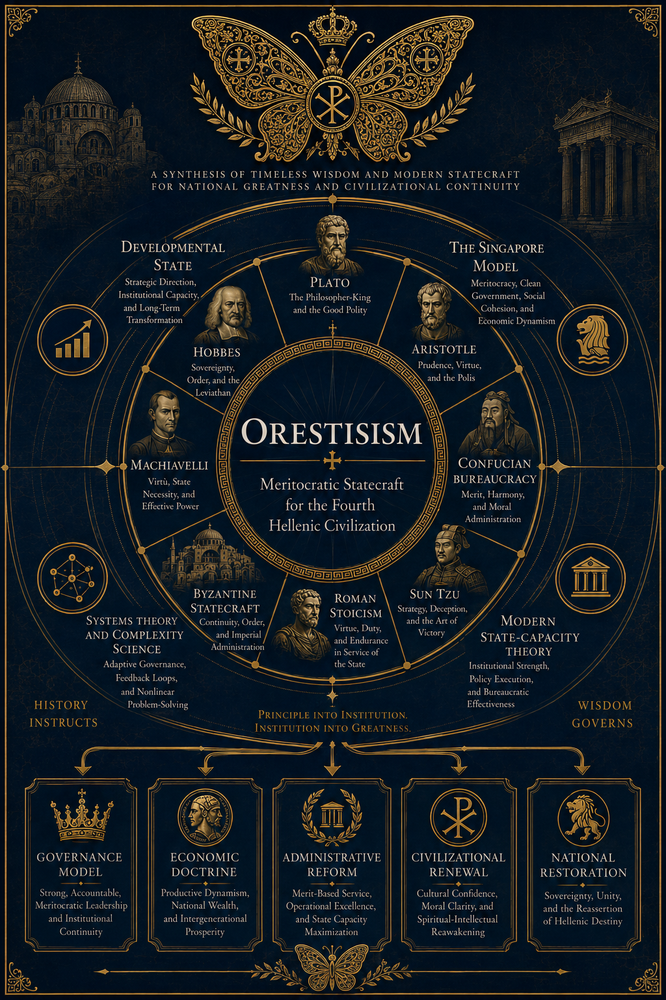

Orestisism
The Fourth Hellenic Civilization
Orestisism is a political doctrine developed by Orestis II of Greece (Orestis the Great), centered on the belief that civilizations rise or decline according to the quality of leadership, institutional competence, and long-term strategic planning.
It rejects both the worship of popularity and the cynicism of pure power politics, aspiring instead toward a society governed by responsibility, excellence, and long-term stewardship. Drawing upon classical philosophy, Confucian meritocracy, Byzantine statecraft, developmental-state theory, and modern systems thinking, Orestisism views civilization not as an accident, but as a project maintained across generations.
The Four Hellenic Civilizations
According to the historical framework of Orestisism, Hellenic history may be understood as four successive civilizational projects:
| Civilization | Era | Defining Principle |
|---|---|---|
| First Hellenic Civilization | Classical Antiquity | Birth of philosophy, science, and democracy |
| Second Hellenic Civilization | Byzantium | Synthesis of Hellenic culture, Roman statecraft, Orthodox Christianity |
| Third Hellenic Civilization | Modern Greek State (1821–present) | Incomplete state-building, instability, factionalism, modernization struggles |
| Fourth Hellenic Civilization | The future | Meritocratic, sovereign, technologically advanced civilizational renewal |
The purpose of Orestisism is not to recreate the past, but to complete the unfinished work of the Third Hellenic Civilization and lay the foundations of the Fourth.
The Royal Insignia
The emblem of Orestisism is the Double-Headed Butterfly, a symbolic fusion of historical memory and the butterfly effect of complexity theory.
Its twin heads represent the union of past and future, memory and innovation, heritage and progress. The wings symbolize the capacity of small actions, disciplined institutions, and exceptional individuals to alter the course of history. The butterfly itself stands for resilience and transformation.
Book I - On Government
I. Competence Before Popularity
Complex societies demand capable leadership. The prosperity of a nation depends not on slogans, popularity contests, or fleeting passions, but on the character and competence of those entrusted with responsibility.
Orestisism draws inspiration from the Platonic philosopher-king and the Confucian scholar-official. Wealth, inheritance, and popularity are secondary; competence is the first qualification for leadership.
Decisions that affect millions must be made by those who have demonstrated judgment, knowledge, and the ability to deliver results.
II. Order as the Highest Political Good
Order is the foundation of liberty. Without functioning institutions, predictable laws, and civic trust, freedom becomes unstable and short-lived.
Orestisism regards order as the highest political good. It enables citizens to plan, build, create, and pursue long-term goals without fear of systemic breakdown.
Social order is not an obstacle to liberty; it is its prerequisite.
III. Leadership as Service
Authority is not privilege but responsibility. Those entrusted with power bear greater obligations, not greater rewards.
The ideal leader is a steward: disciplined, self-controlled, and committed to the long-term welfare of the state.
The higher the office, the greater the duty to serve.
IV. Legitimacy Through Results
Political legitimacy is not derived from rhetoric, ideology, or popularity, but from outcomes.
Institutions must be evaluated by performance, policies by effectiveness, and leaders by results achieved.
The ultimate source of political legitimacy is not rhetoric, but results.
V. Institutional Capacity
Civilizations are sustained not only by ideas or leadership, but by institutions capable of turning strategy into action.
A state may possess talented leaders, sound laws, and ambitious plans, yet still fail if its administrative machinery is weak, fragmented, or incapable of execution.
Orestisism emphasizes the construction of disciplined, competent, and resilient institutions capable of long-term planning, effective coordination, and consistent implementation.
Strategy without institutions is aspiration without execution.
Book II - On Citizenship and Duty
VI. Duty Before Entitlement
Civilizations endure when their members understand responsibility as fundamental to civic life.
Rights and freedoms are sustained only when balanced by obligations toward the community.
Citizenship is not merely a collection of rights, but a vocation.
VII. Strategic Thinking and Long-Term Vision
Political systems must be designed with long-term consequences in mind. Short-term incentives often undermine future stability.
Effective leadership builds institutions that outlast electoral cycles and immediate pressures.
Politics is a game of chess played across generations.
VIII. Rejection of Utopianism
Institutions must be designed for real human behavior, not idealized assumptions.
Orestisism assumes individuals are rational, self-interested agents whose motivations must be channeled, not denied.
The task of institutions is not to perfect humanity, but to align individual incentives with long-term civilizational interests.
Book III - On Nation and Civilization
IX. National Continuity
A nation is a historical community linking past, present, and future generations.
Orestisism regards national continuity as a core responsibility of the state.
A nation is a partnership between the dead, the living, and those yet to be born.
X. Sovereignty and Self-Reliance
Sovereignty is the capacity of a nation to determine its own future.
While international cooperation is valuable, dependence that undermines autonomy is rejected.
Only sovereign nations can cooperate as equals.
XI. Culture, Symbols, and Shared Identity
Civilizations are sustained by shared narratives, symbols, and collective memory.
Without cultural cohesion, political and economic structures lose long-term stability.
A society that loses its story risks losing itself.
XII. Civilizational Resilience
Civilizations survive not by avoiding adversity, but by preparing for it.
Orestisism seeks to build institutions capable of adapting to technological change, demographic pressure, military conflict, economic disruption, and unforeseen crises without abandoning long-term national purpose.
Resilience is the highest expression of strategic foresight.
The Intellectual Genealogy of Orestisism
- Plato - guardian rule and epistemic governance
- Aristotle - constitutional government, civic virtue, practical politics, and the pursuit of the common good
- Confucian bureaucratic tradition - meritocratic administration and examinations
- Sun Tzu - strategic competition and asymmetric advantage
- Roman Stoicism - duty, discipline, and institutional resilience
- Byzantine statecraft - imperial administration, civilizational continuity, and sacralized sovereignty
- Niccolò Machiavelli - realism in power politics
- Thomas Hobbes - sovereignty, internal order, and state capacity
- Developmental-state tradition - state-led industrial policy, strategic economic planning, and technocratic governance
- The Singapore model (Lee Kuan Yew) - meritocracy, strategic governance, and long-term national planning
- Systems theory and complexity science - adaptive governance, forecasting, and resilience
- Modern state-capacity theory - effective institutions, administrative competence, and implementation

Status of the Doctrine
The present text constitutes the First Authorized Edition of the Principles of Orestisism, as approved by the Royal Chancellery.
Court scholars reserve the right to issue revised editions should history provide additional evidence, new circumstances arise, or reality stubbornly refuse to cooperate.